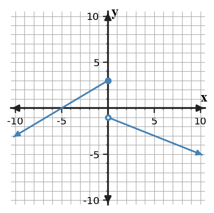

1. Solve and show the minimum work needed to support the result. Find the two one-sided limits at $x=0$ and decide whether the two-sided limit exists.

2. Solve and show the minimum work needed to support the result. A function is undefined at $x=-3$, but its graph approaches $1$ from both sides. Does the two-sided limit exist?
3. Solve and show the minimum work needed to support the result. Do the left and right sides of the table support the same finite limit? State the limit if so.
| x | -1.1 | -1.01 | -1.001 | -0.999 | -0.99 | -0.9 |
|---|---|---|---|---|---|---|
| f(x) | -4.2 | -4.03 | -4.003 | -3.997 | -3.97 | -3.8 |
4. Solve and show the minimum work needed to support the result. Estimate $\lim_{x\to 3^+}f(x)$ from the table.
| x | 2.9 | 2.99 | 2.999 | 3.001 | 3.01 | 3.1 |
|---|---|---|---|---|---|---|
| f(x) | 5.8 | 5.97 | 5.997 | 6.003 | 6.03 | 6.2 |
5. Solve and show the minimum work needed to support the result. A function is undefined at $x=3$, but its graph approaches $-2$ from both sides. Does the two-sided limit exist?
6. Solve and show the minimum work needed to support the result. For $f(x)=x^2$, the secant slope from $x=1$ to $x=1+h$ equals $2+h$. What number do these slopes approach as $h$ approaches 0?
7. Solve and show the minimum work needed to support the result. A moving object's position is $s(t)=t^2+2t$ meters. Compare the average velocity on $[4,5]$ with the average velocity on $[4,4.1]$. Which is the better estimate of the instantaneous velocity at $t=4$?
8. Solve and show the minimum work needed to support the result. In $\lim_{x\to 3}f(x)=6$, what value does the input approach and what value does the output approach?
9. Solve and show the minimum work needed to support the result. For $f(x)=x^2$, the secant slope from $x=4$ to $x=4+h$ equals $8+h$. What number do these slopes approach as $h$ approaches 0?
10. Solve and show the minimum work needed to support the result. A moving object's position is $s(t)=t^2+2t$ meters. Compare the average velocity on $[3,4]$ with the average velocity on $[3,3.1]$. Which is the better estimate of the instantaneous velocity at $t=3$?
11. Solve and show the minimum work needed to support the result. For $p(x)=\begin{cases}-5,&x\lt -1\\2,&x\ge -1\end{cases}$, find $p(-2)$.
12. Solve and show the minimum work needed to support the result. Rewrite $x^2-49$ as a product of linear factors.
13. Solve and show the minimum work needed to support the result. Evaluate $g(2)$ for $g(x)=\frac{2x+2}{x+1}$.
14. Solve and show the minimum work needed to support the result. Find the x-intercepts of $y=(x-5)(x+6)$.
15. Solve and show the minimum work needed to support the result. Solve $(x-2)(x+0)=0$.
16. Solve and show the minimum work needed to support the result. For $r(x)=\frac{6}{x}$, determine the secant slope from $x=2$ to $x=4$.
17. Solve and show the minimum work needed to support the result. Evaluate $\log_{3}(9)$.
18. Solve and show the minimum work needed to support the result. For $p(x)=\begin{cases}-4,&x\lt 2\\-1,&x\ge 2\end{cases}$, find $p(3)$.
19. Solve and show the minimum work needed to support the result. Find the average rate of change of $p(x)=3x^2+0x$ on $[-1,3]$.
20. Solve and show the minimum work needed to support the result. Let $f(x)=5x-1$ and $g(x)=3x-1$. Compute $(f\circ g)(2)$.